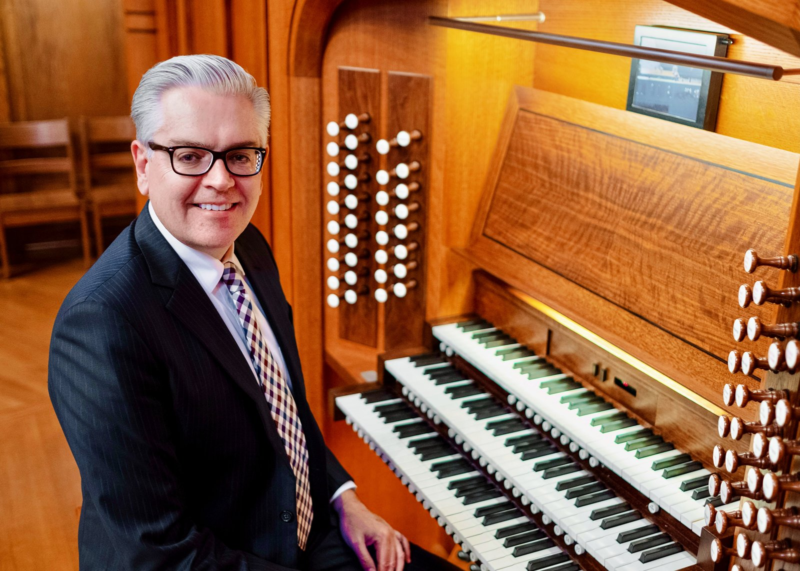

Biography

Samuel Metzger grew up in northern Arizona, where his father was a missionary to the Navajo Indians. He began music lessons at age 11 at the Preparatory School of Music at Northern Arizona State University. Samuel’s undergraduate studies were at Arizona State University. He was awarded a Fulbright Scholarship and studied with Jon Laukvik at the Hochschule für Musik und Darstellende Kunst in Stuttgart, Germany. He then studied with Marie-Claire Alain in St. Germain-en-Laye, France.
In January 2003, Mr. Metzger became Senior Organist at Coral Ridge Presbyterian Church (PCA), Fort Lauderdale, Florida, Dr. D. James Kennedy, Senior Pastor. Services were broadcast on the Coral Ridge Hour, a TV program broadcast throughout the USA and internationally to 202 countries.
Samuel was Director of Music and Organist for over eight years at the historic Second Presbyterian Church (EPC) in Memphis, Tennessee.
Samuel is Director of Worship and Music at Covenant Presbyterian Church (PCA) in Nashville, Tennessee. Mr. Metzger is heard regularly around the country in concert. He has recorded seven CDs and has published several hymn settings with MorningStar Music. More performances are on Samuel’s YouTube channel.